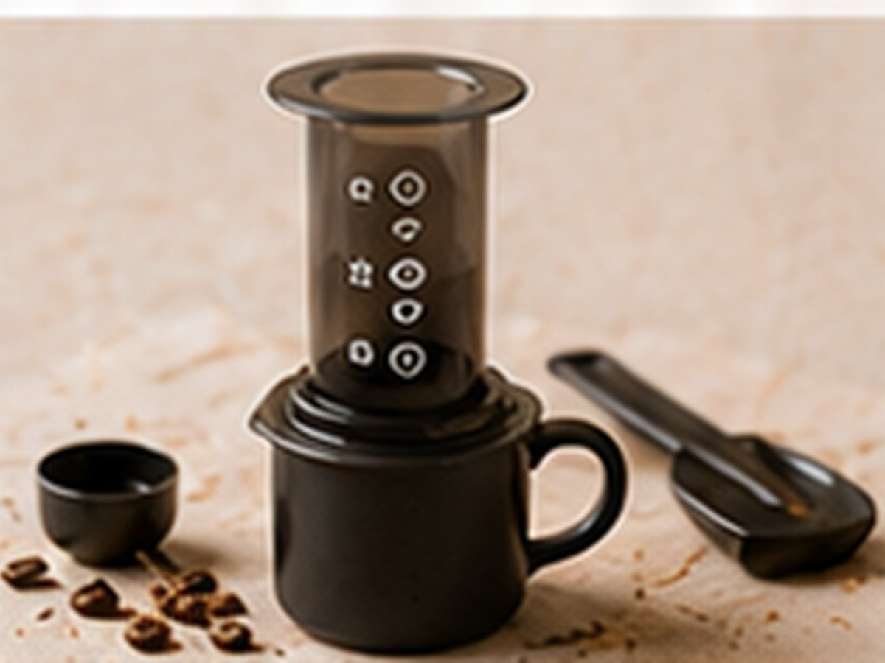

✨ KI-generiertes Bild Filterkaffee-KlassikerFilterkaffee-Klassiker
AeroPress Express
Schnell, wandelbar, überall.
⏱3 Min.
📶Einfach
☕1 Portion
🫘Zutaten
- Kaffee, fein gemahlen16 g
- Wasser210 ml
📋Zubereitung
- 1Presse invertiert aufbauen, Kaffee einfüllen.
- 2Mit Wasser aufgießen, kurz umrühren, 1 Minute ziehen lassen.
- 3Umdrehen und langsam durchpressen.
💡
Kaffee für dieses Rezept entdeckenLeNoKo Shop
→
Kaffee-Tipp
unsere Linzer Röstung funktioniert vielseitig auch in der AeroPress.